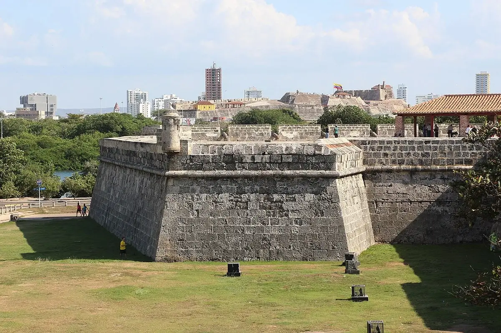
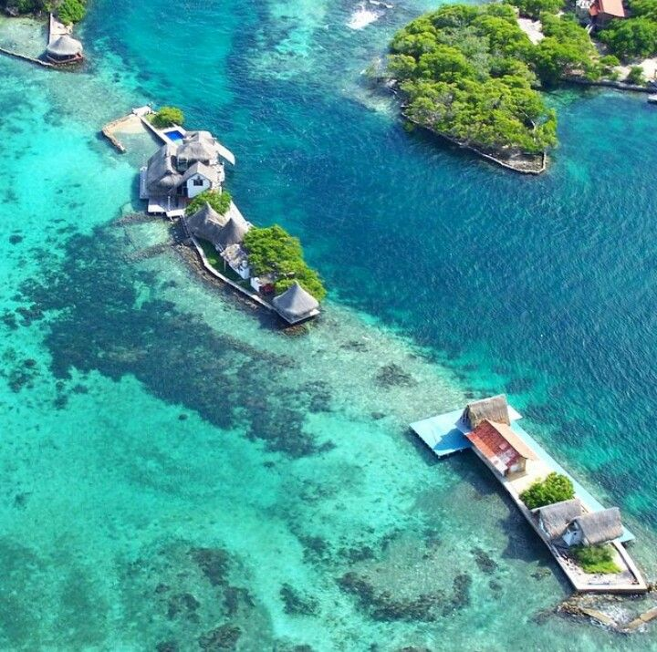
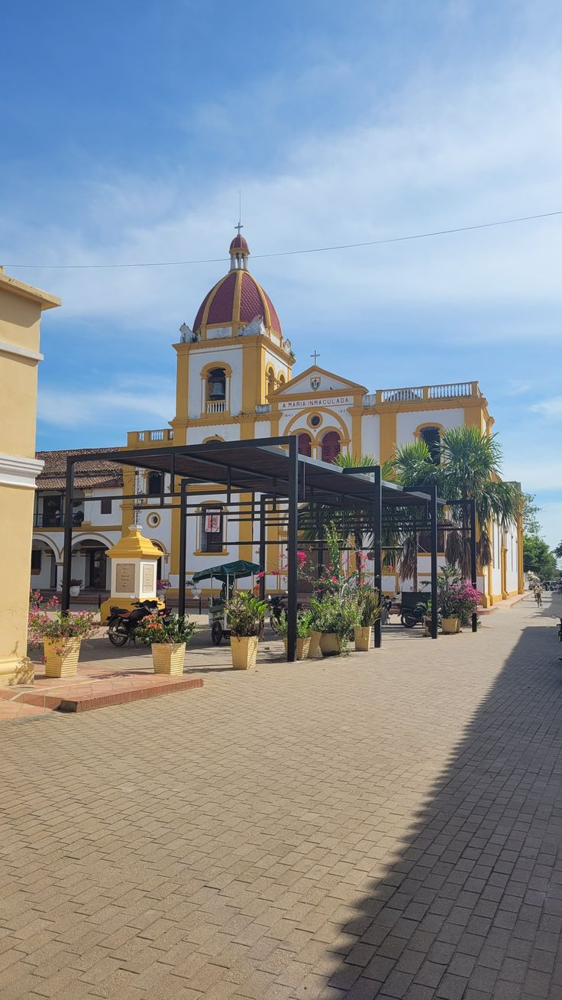

Descubre Bolívar
Bolívar es un departamento lleno de historia, cultura y playas paradisíacas. Su capital, Cartagena de Indias, es Patrimonio de la Humanidad y uno de los destinos turísticos más importantes de Colombia, famoso por sus murallas, calles coloniales y el imponente Castillo de San Felipe.
En A&G TOURS ofrecemos transporte turístico y empresarial para quienes deseen explorar Cartagena, sus islas cercanas como Barú y el archipiélago del Rosario, así como pueblos tradicionales que muestran la riqueza cultural de la región.
Nuestro compromiso es brindar viajes cómodos, seguros y organizados, para que descubras lo mejor de Bolívar y vivas experiencias inolvidables en el Caribe colombiano.
Castillo de San Felipe de Barajas
Dominando la ciudad desde su elevación estratégica, el Castillo de San Felipe de Barajas es una fortaleza militar del siglo XVII considerada uno de los mejores ejemplos de ingeniería defensiva colonial. Sus túneles laberínticos y murallas imponentes cuentan historias de ataques y defensa que transportan a los visitantes al pasado bélico del Caribe.
Playas de Barú
A minutos de Cartagena, las Playas de Barú como Playa Blanca, Cholón y Agua Azul ofrecen aguas cristalinas, arenas blancas y tranquilidad caribeña. Son un refugio ideal para relajarse, disfrutar del mar y degustar sabores típicos frente al horizonte azul del Caribe colombiano.
Islas del Rosario
El archipiélago de las Islas del Rosario es un conjunto de islas coralinas protegidas, hogar de uno de los arrecifes más importantes del Caribe colombiano. Perfectas para el buceo, snorkel y la observación de fauna marina en su entorno natural.
Parque de Bolívar
El Parque de Bolívar (o Plaza de Bolívar) en el centro histórico de Cartagena es un símbolo cultural y de encuentro. Rodeado por edificios históricos como el Museo del Oro Zenú, la catedral y el Palacio de la Inquisición, es un espacio simbólico lleno de historia urbana.
Santa Cruz de Mompox
Santa Cruz de Mompox, Patrimonio de la Humanidad, es una joya colonial a orillas del río Magdalena. Sus calles empedradas, iglesias históricas y tradición orfebre en filigrana lo convierten en un destino cultural único en el departamento de Bolívar.
San Basilio de Palenque
San Basilio de Palenque es el primer pueblo libre de América y Patrimonio Cultural e Inmaterial de la Humanidad por la UNESCO. Conserva su lengua criolla, música, danzas y tradiciones únicas, siendo un destino imprescindible para quienes desean conocer la raíz afrocolombiana en Bolívar.
¡Contáctanos!